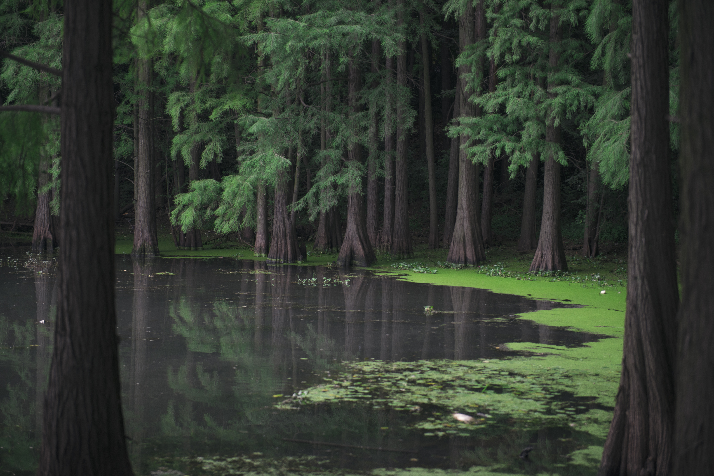
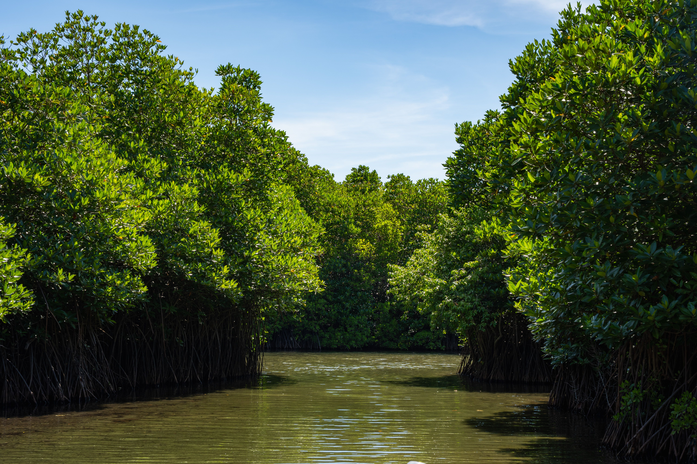

The Vital Aquatic Borderlands
Wetlands and mangrove forests form dynamic transition zones where land meets water. Teeming with life, these saturated areas support an immense variety of amphibious creatures, wading birds, and unique salt-tolerant trees equipped with complex root systems.
Far from being stagnant, these ecosystems act as biological powerhouses—filtering pollutants, recharging groundwater supplies, and providing critical nurseries for coastal marine species.
Coastal Protection & Natural Filtration
For students studying environmental science, wetlands serve as Earth's natural kidneys. Their dense vegetation and microbial soil networks trap sediment, absorb excess nutrients, and neutralize toxic runoff before it reaches open oceans.
Additionally, coastal mangrove forests act as shock absorbers, protecting mainland communities from severe storm surges, tropical cyclones, and rising sea levels.

Key Environmental Metrics
Essential scientific data points defining the wetland and mangrove biome.
4x More
Absorbed compared to upland forests
~75%
Of commercial fish species spawn here
66%
Wave energy reduction by mangroves